The creative is responsible for 80% of your ad results. This page covers everything you need to know — the photos we want from you, how our AI ad strategy works, and the video formats we use to generate leads for your business.
📸 Part 1: Photo Guidelines
💡
Do you have professional photos? If yes — great! Send through everything you've got and we'll test those alongside what we create. If not, that's completely fine — read on to understand why it doesn't matter.
Why the creative is everything
On Facebook and Instagram, images are what stop the scroll. If your creative doesn't grab attention in half a second, the ad fails. You're competing with every other tradie, advertiser, and cat video on their feed.
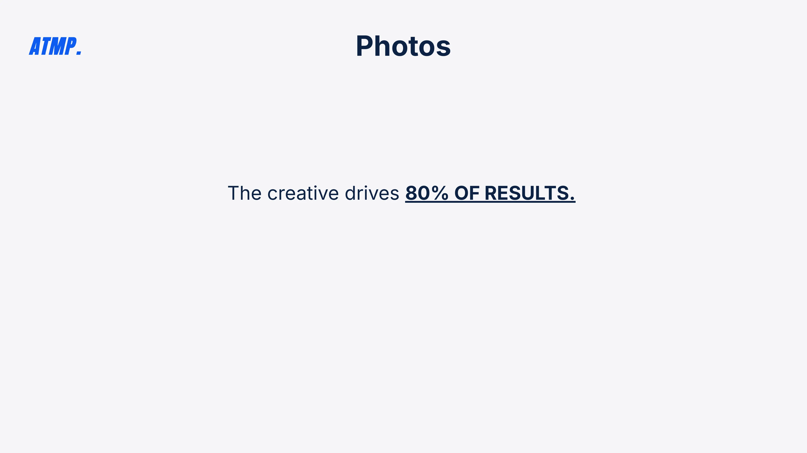
From our onboarding presentation — the creative drives 80% of results
🧑🔧
Solo Pics in Logo'd Uniform
The most important photo type — it puts a face to the business
✓ Face is clear in picture✓ Logo is present on uniform✓ Looking directly at camera✓ Professional setting
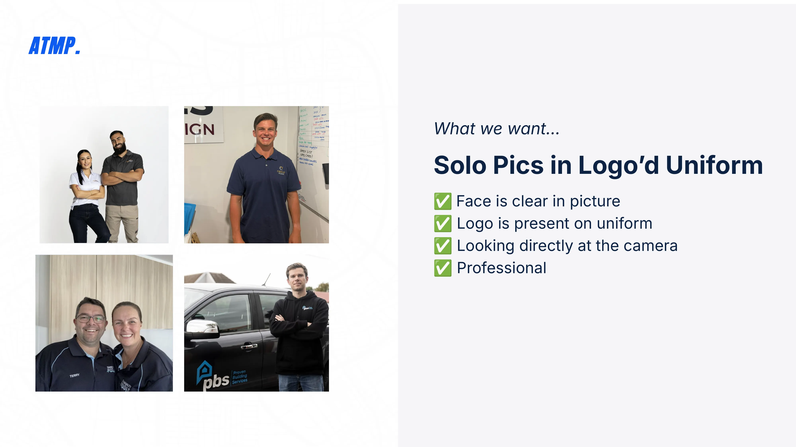
Examples of great solo and duo shots from our client base
👷♂️
Team Photos
Shows scale and professionalism — builds trust with larger homeowners
✓ Professional appearance✓ Logo visible on uniform✓ Looking at the camera✓ On-site or branded backdrop
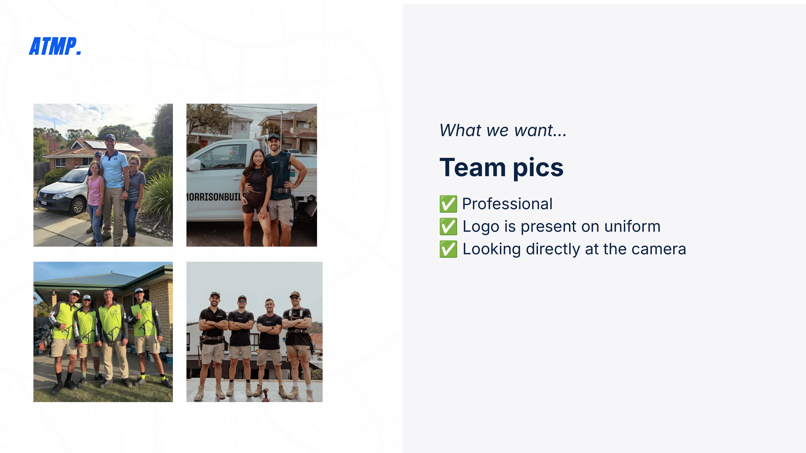
Team photos from real ATMP clients — these perform exceptionally well as ad creatives
🏗️
Onsite Photos
Shows you in action — homeowners want to see the work being done
✓ Has people in the shot✓ Completing the job✓ Face and logo both clear✓ Professional quality
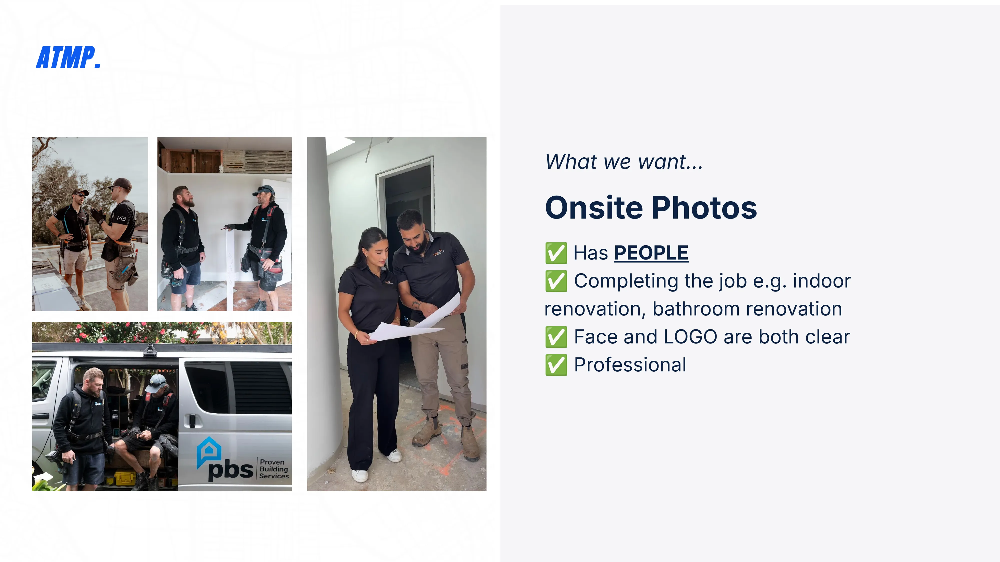
Onsite photos — people completing the job is key. The PBS logo visible on the van is a great touch.
🔄
Job Photos & Before/Afters
The highest-converting image type for renovation and trade businesses
✓ Before & afters of your target service✓ Send 5 separate versions✓ Same angle for both shots✓ Clear, well-lit photography
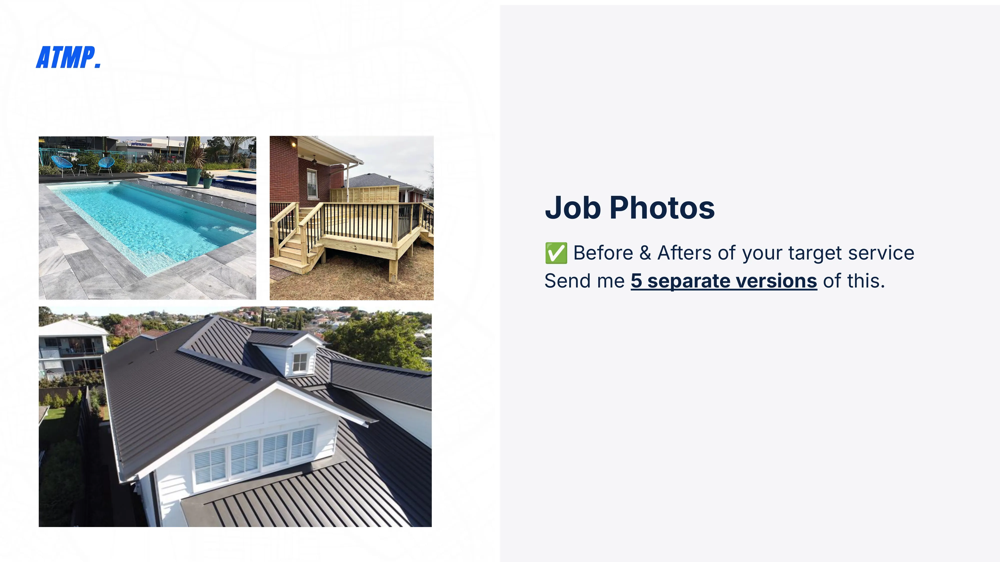
Job photos from real clients — pools, decks, roofing. Send 5 separate versions of your best work.
📱
Even selfies work! Send us what you have — it could be you on a walk, cheeky selfies, or you on a holiday. The less work you do on this, the better. Let us do the heavy lifting.
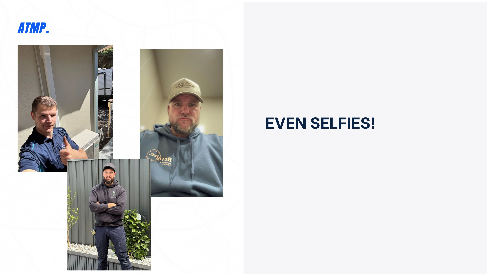
Real examples — casual selfies and phone photos from clients that became high-performing ads
🤖 Part 2: Our AI Ad Strategy
Why we use Hyper-Realistic AI Ads
We've tested AI-driven creatives against real photos across 24+ campaigns. The results speak for themselves — AI wins almost every time, and here's the data to prove it.
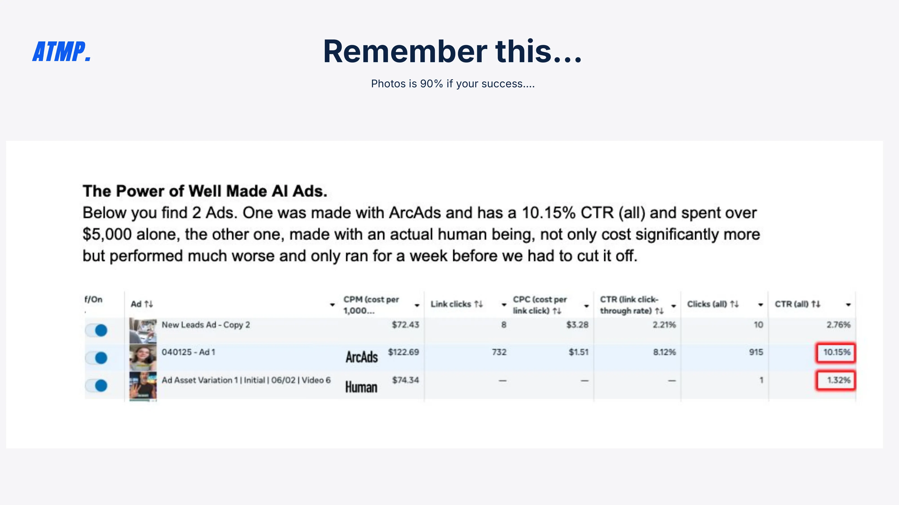
ArcAds AI creative: 10.15% CTR. Human photo ad: 1.32% CTR. Same campaign, same audience.
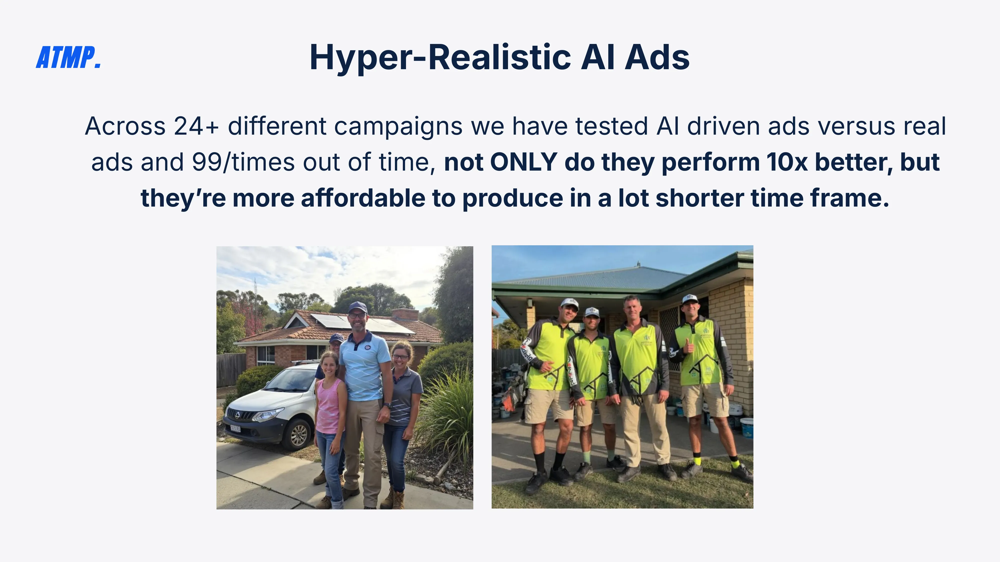
Across 24+ campaigns — AI creatives perform 10x better and cost less to produce
📊 The Numbers Don't Lie
Across 24+ campaigns, we've tested AI-driven ads versus real photos. 99 times out of 100, AI creatives not only perform better — they're more affordable to produce in a fraction of the time. Nothing goes live without your approval.
10x
Better performance vs. human photo ads
24+
Campaigns tested across AU & NZ
10.15%
CTR achieved with AI creative (vs 1.32% human)
What AI ads look like in practice
These are real examples of the hyper-realistic AI ad creatives we produce for tradie businesses. Each variation tests a different colour scheme, hook, and layout to find what performs best for your audience.
Variation A — White/Yellow
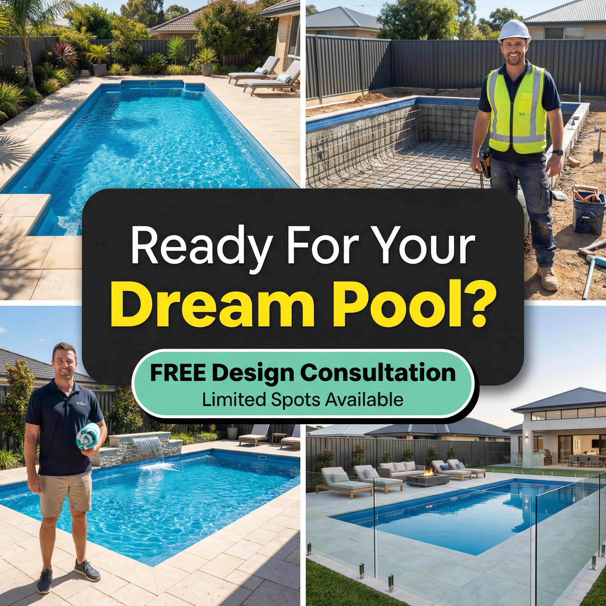
Variation B — Dark Teal
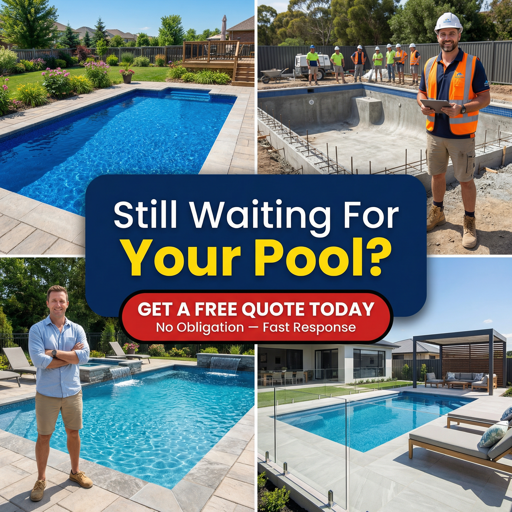
Variation C — Navy/Red
Variation D — White/Blue
Variation E — Charcoal/Gold
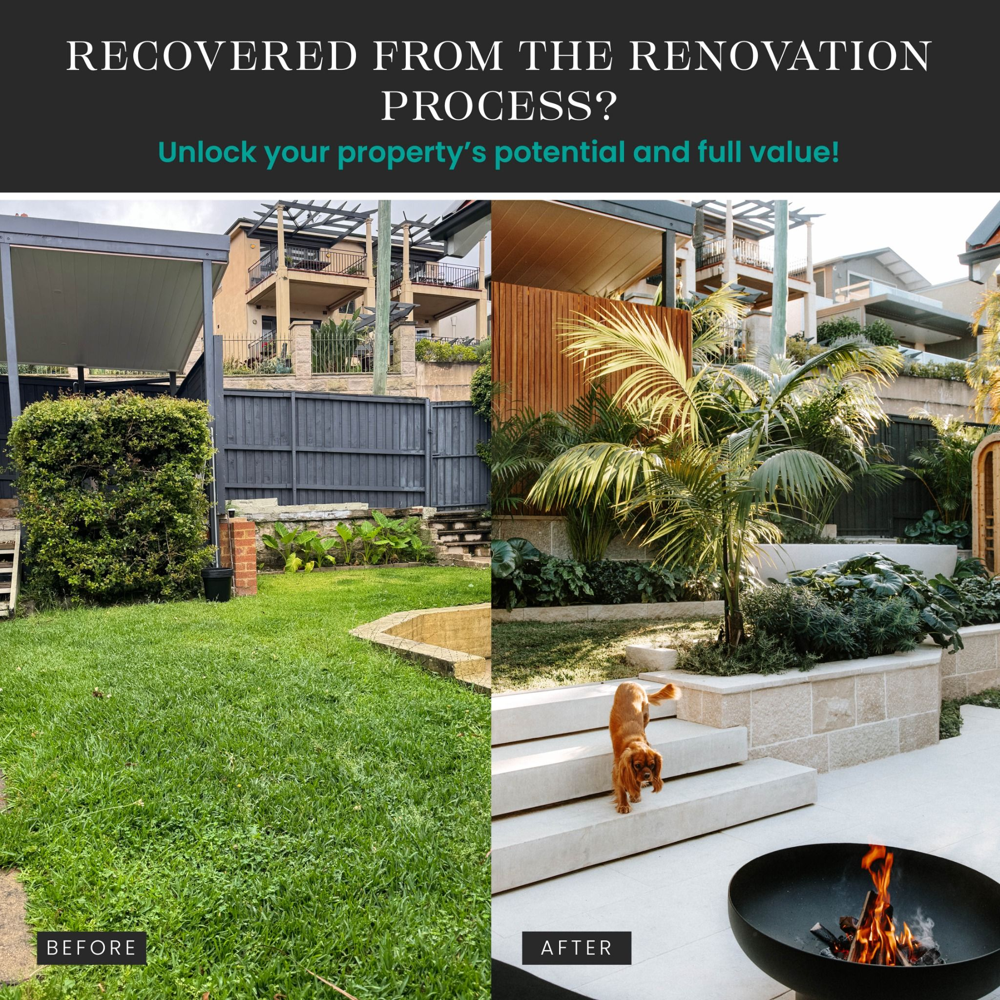
Live Facebook Ad Example
✅
Nothing goes live without your sign-off. We'll send you all creatives for approval before they go into the campaign. You'll always have the final say on what runs.
🎬 Part 3: Video Ad Examples
The 4 Video Ad Formats
These are the four video formats we use to generate leads for tradie businesses. Each one serves a different purpose in the customer journey. Watch the examples below to understand what we're looking for — then film your own and send it through to Aaron on WhatsApp.
🤳 Selfie / Talking Head
The most powerful format for building trust. You speak directly to camera — no script needed, just be natural. Homeowners want to see the person behind the business before they enquire. This format builds the "know, like, trust" factor faster than any other.
30–60 secondsSpeak naturallyGood lightingBranded uniformOutdoors or on-site
Example 1
Example 2
🏗️ Project Showcase
A walkthrough of a completed job. This format shows homeowners the quality of your work in a real-world context. Film yourself walking through a finished project, pointing out key details. It demonstrates expertise and builds confidence in your craftsmanship.
Walk the finished jobPoint out key details30–90 secondsNatural commentaryGood lighting
Example 1
⭐ Testimonial
A happy client speaking directly to camera about their experience. This is the most credible form of social proof — real homeowners talking about real results. Ask a satisfied client to record a short video on their phone. Authenticity matters more than production quality here.
Real client, real words30–60 secondsFilmed at their homeUnscripted is betterMention specific results
Example 1
🔄 Transformation
The before-and-after reveal. This is the highest-performing format for renovation and trade businesses because it creates an immediate visual impact. Film the "before" state, then reveal the "after" — the contrast does the selling for you. Homeowners see exactly what's possible for their own home.
Same angle for both shotsDramatic reveal moment15–45 secondsAdd music in editClear before state
Example 1
Example 2
Example 3
Example 4
📲
How to film: Use your phone in portrait (vertical) mode. Film in a well-lit area. Don't worry about perfection — authentic, natural content outperforms polished corporate video every time. Send the raw footage to Aaron on WhatsApp and we'll handle the rest.
🎉
You're All Set!
You've completed all 6 onboarding steps. Aaron will walk you through everything on your call and your campaign will be ready to launch immediately after.